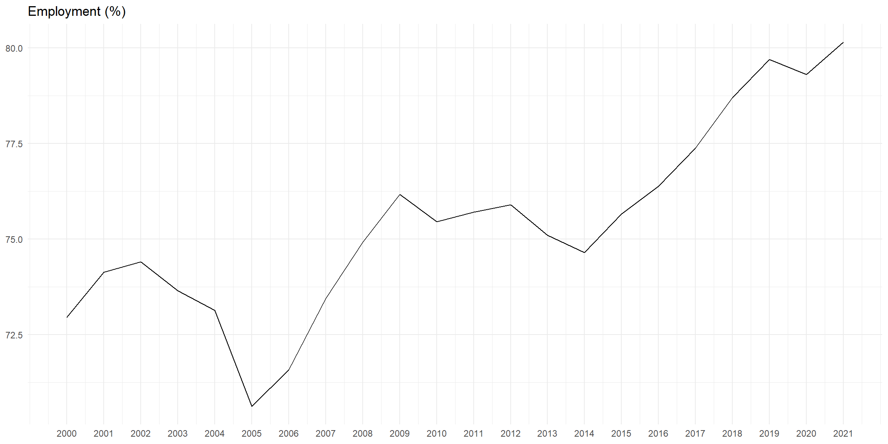
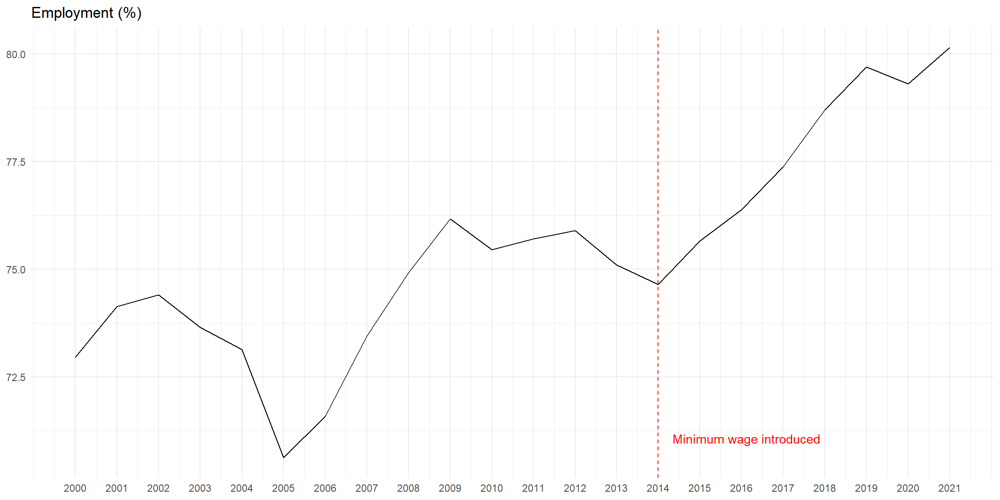
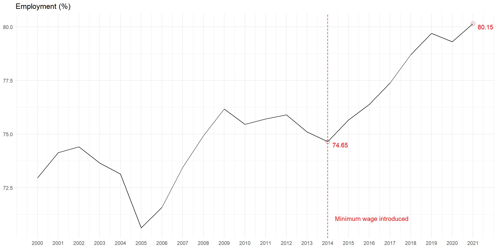
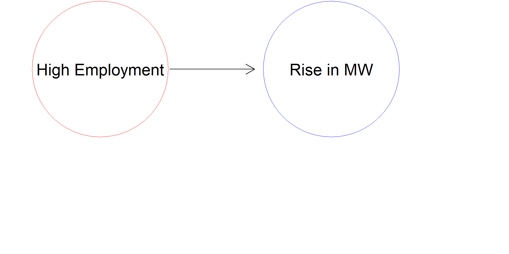
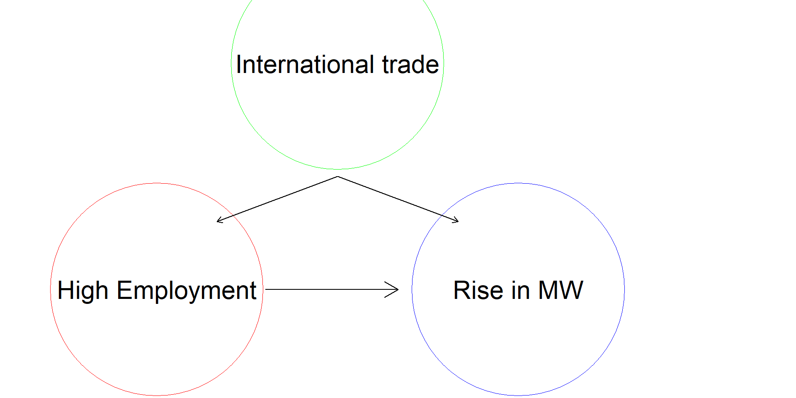
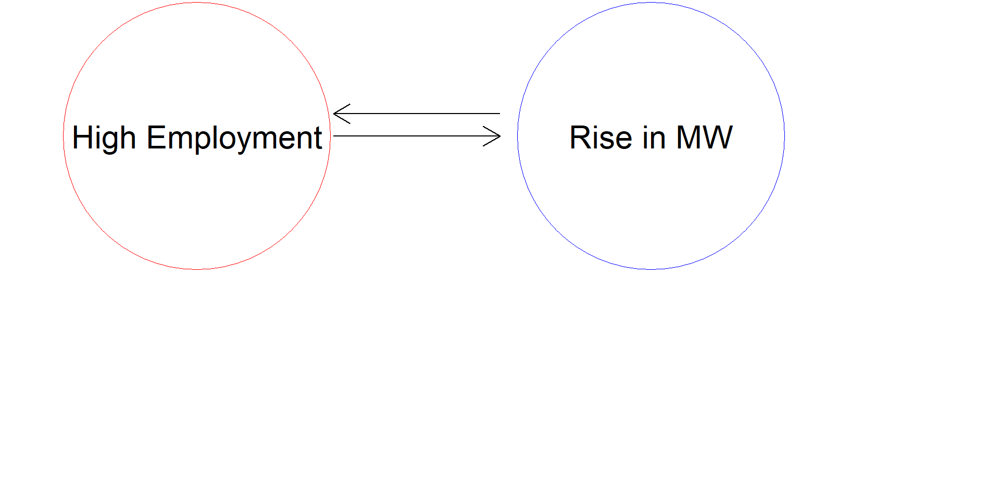
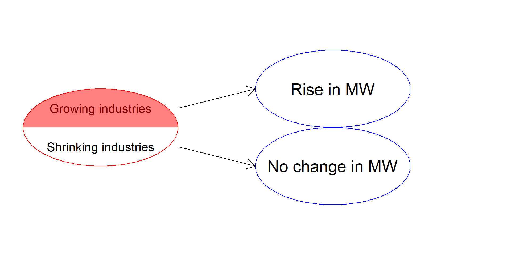
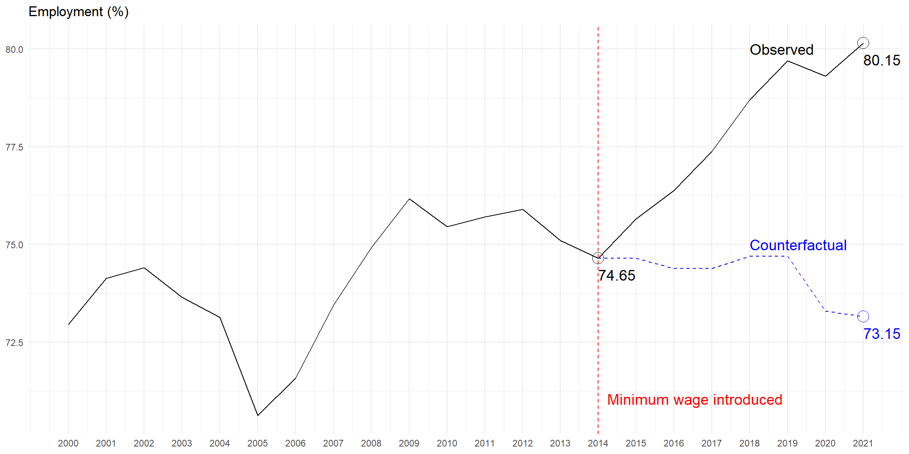

Causal Inference Methods for Policy Evaluation
01-Potential Outcome Casual Model
Jacopo Mazza
Utrecht School of Economics
2025
What is Policy Evaluation?
Policy Evaluation is:
The process of assessing the effects of a policy
- What is the effect of minimum wage on employment?
- What is the effect of a tax on carbon emissions on the environment?
- What is the effect of lockdown on the spread of COVID-19?
- What is the effect of parental leave on fertility?
- What is the effect of R&D subsidies on innovation?
How do you evaluate a policy?
The Affordable Rent Act
- Background.
- In 2024 the Dutch government introduced the Affordable Rent Act to make renting more affordable.
- Mechanism: A points system sets maximum rents based on property characteristics.
- Key Thresholds:
- ≤ 186 points: Max €1,157.95/month
- ≤ 143 points: Max €880/month
- \(>\) 186 points: Free market (no caps).
- Criticism: It allegedly reduced rental supply and increased prices.
Key Questions

- Did the law cause these unintended consequences?
- How can we determine the causal impact of the policy?
Simple: look at the data!
Simple: look at the data!

Simple: look at the data!

Correlation is not causation!
So what is causation?
So why is correlation not causation?
- Reverse causality: the effect causes the cause
- Omitted variable bias: the cause and the effect are caused by a third variable
- Simultaneity: the cause and the effect are jointly determined
- Selection bias: the cause is not randomly assigned




Understanding causation: the counterfactual
“If a person eats of a particular dish, and dies in consequence, that is, would not have died if he had not eaten of it, then the food was the cause of his death.”
— J.S. Mill
The counterfactual in policy evaluation

Can you think of a policy impacted by false assumptions about causality?
The Potential Outcome Model
The counterfactual language
A unit (\(i\)) (e.g. an individual, a firm, a country) can be:
- treated (\(D_i = 1\))
- untreated (\(D_i = 0\))
We indicate:
- the potential outcome of unit \(i\) under treatment as \(Y_i^1\)
- the potential outcome of unit \(i\) under no treatment as \(Y_i^0\)
- the observed outcome of unit \(i\) as \(Y_i\)
The switching equation
The observed outcome of unit \(i\) is: \[ Y_i = D_i Y_i^1 + (1 - D_i) Y_i^0 \]
- if \(D_i = 1\) then \(Y_i = Y_i^1\) and \(Y_i^0\) is the counterfactual
- if \(D_i = 0\) then \(Y_i = Y_i^0\) and \(Y_i^1\) is the counterfactual
The treatment effect of unit \(i\) is: \[ \delta_i = Y_i^1 - Y_i^0 \]
…but we can only observe one of the two potential outcomes!
The fundamental problem of causal inference
Important
\(\delta_i\) can never be observed
- \(\delta_i\) is fundamentally unobservable
- \(\delta_i\) is not the same as the observed difference between groups
- Causal inference is fundamentally a problem of missing data
Why can we not just compare means?
- Observed mean of the treated units:
\(Avg[Y_i|D_i=1] = \frac{1}{N_1} \sum_{i=1}^{N_1} Y_i\) - Observed mean of the untreated units:
\(Avg[Y_i|D_i=0] = \frac{1}{N_0} \sum_{i=0}^{N_0} Y_i\) - Observed difference:
\(Avg[Y_i|D_i=1] - Avg[Y_i|D_i=0] = \\ Avg[Y_i^1|D_i=1] - Avg[Y_i^0|D_i=0]\) - Remember: \(\delta_i = Y_i^1 - Y_i^0\)
- We can show that: \[ Avg_n[Y_i^1|D_i=1] - Avg_n[Y_i^0|D_i=0] = \\ {\delta + Avg_n[Y_i^0|D_i=1] - Avg_n[Y_i^0|D_i=0]} \]
The outcome of cancer treatment
| Patient | \(Y^1\) | \(Y^0\) | \(\delta\) |
|---|---|---|---|
| 1 | 7 | 1 | 6 |
| 2 | 5 | 6 | -1 |
| 3 | 5 | 1 | 4 |
| 4 | 7 | 8 | -1 |
| 5 | 4 | 2 | 2 |
| 6 | 10 | 1 | 9 |
| 7 | 1 | 10 | -9 |
| 8 | 5 | 6 | -1 |
| 9 | 3 | 7 | -4 |
| 10 | 9 | 8 | 1 |
The outcome of cancer treatment
| Patient | \(Y^1\) | \(Y^0\) | \(\delta\) |
|---|---|---|---|
| 1 | 7 | 1 | 6 |
| 2 | 5 | 6 | -1 |
| 3 | 5 | 1 | 4 |
| 4 | 7 | 8 | -1 |
| 5 | 4 | 2 | 2 |
| 6 | 10 | 1 | 9 |
| 7 | 1 | 10 | -9 |
| 8 | 5 | 6 | -1 |
| 9 | 3 | 7 | -4 |
| 10 | 9 | 8 | 1 |
- \(Y^1\) is the years gained with surgery
- \(Y^0\) is the years gained with chemotherapy
- \(E[Y^1] = 5.6\) and \(E[Y^0] = 5\)
- \(\delta\) is the causal effect of surgery on years gained
- \(E[\delta] = E[Y^1]-E[Y^0]= 0.6\)
- In this case \(\delta\) is the average treatment effect (ATE)
The outcome of cancer treatment
| Patient | \(Y^1\) | \(Y^0\) | \(\delta\) | D |
|---|---|---|---|---|
| 1 | 7 | 1 | 6 | 1 |
| 2 | 5 | 6 | -1 | 0 |
| 3 | 5 | 1 | 4 | 1 |
| 4 | 7 | 8 | -1 | 0 |
| 5 | 4 | 2 | 2 | 1 |
| 6 | 10 | 1 | 9 | 1 |
| 7 | 1 | 10 | -9 | 0 |
| 8 | 5 | 6 | -1 | 0 |
| 9 | 3 | 7 | -4 | 0 |
| 10 | 9 | 8 | 1 | 1 |
The outcome of cancer treatment
| Patient | \(Y^1\) | \(Y^0\) | \(\delta\) | D |
|---|---|---|---|---|
| 1 | 7 | 6 | 1 | |
| 2 | 6 | -1 | 0 | |
| 3 | 5 | 4 | 1 | |
| 4 | 8 | -1 | 0 | |
| 5 | 4 | 2 | 1 | |
| 6 | 10 | 9 | 1 | |
| 7 | 10 | -9 | 0 | |
| 8 | 6 | -1 | 0 | |
| 9 | 7 | -4 | 0 | |
| 10 | 9 | 1 | 1 |
- \(D_i=1\) if patient \(i\) is treated with surgery
- \(D_i=0\) if patient \(i\) is treated with chemotherapy
- The perfect doctor will always choose the best treatment
- The observed outcome is \(Y_i = D_i Y_i^1 + (1 - D_i) Y_i^0\)
- If I take the difference in means I get:
\(Avg[Y_i^1|D_i=1] - Avg[Y_i^0|D_i=0] = \\ 7 - 7.4 = -0.4\)
ATE or Nothing?
- ATE is probably the most natural measure of treatment effect
- But it is not the only one:
Average Treatment Effect on the Treated (ATT):
\(E[Y_i^1 - Y_i^0|D_i=1]\)Average Treatment Effect on the Untreated (ATU):
\(E[Y_i^1 - Y_i^0|D_i=0]\)Local Average Treatment Effect (LATE)
Intention to Treat (ITT)
- What we can estimate depends on the data available
- What we care for depends on the question we want to answer